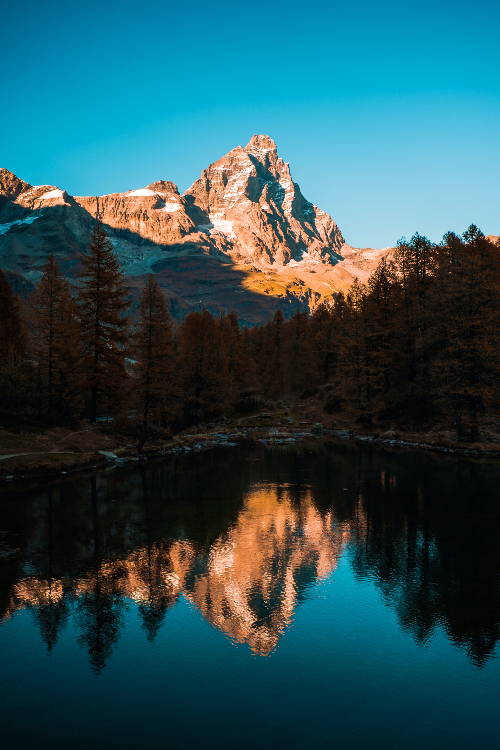

Maybe it's because I grew up in Utah, but I think that mountains are one of God's best creations. I mean, look
how incredible!
Why Mountains?
Your average person may argue that beaches, oceans, deserts, or forests provide the best scenic
lanscapes. Well, they're wrong. I think that mountains are the only things that capture the
grandure of the world. Oceans just don't do it justice.

Isn't it gorgeous?
The Best Part
The most incredible part about mountainscapes are when the sun is setting and casts it's light on the
mountain ranges. Honestly, I would say my favorite time of day is around 5:20 when the light hits
the mountain tops.
Still don't believe that mountainscapes are the best? Spend 2 seconds on this mountain photography website
and you will then be convinced and agree with me when I say they really are the best.